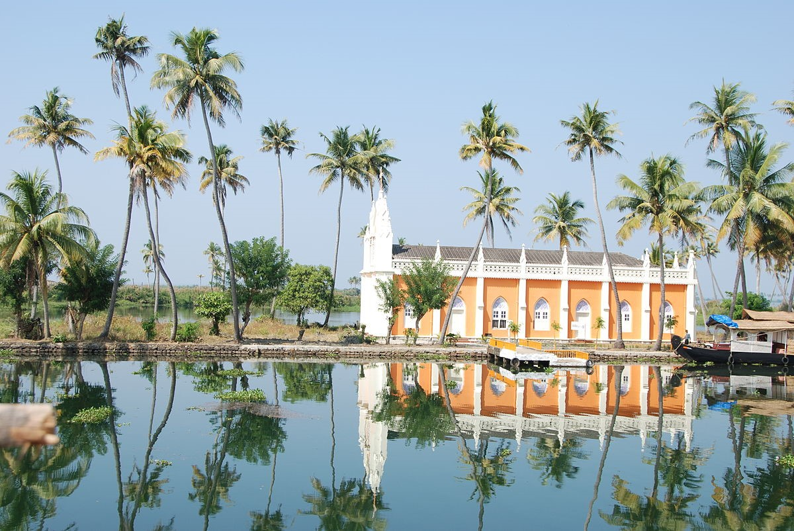
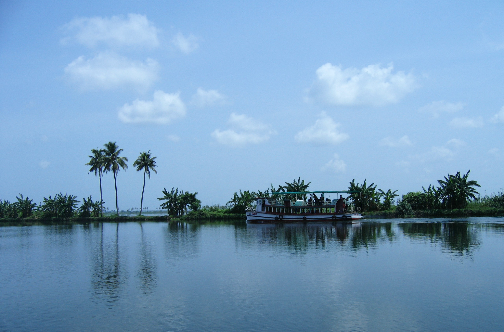
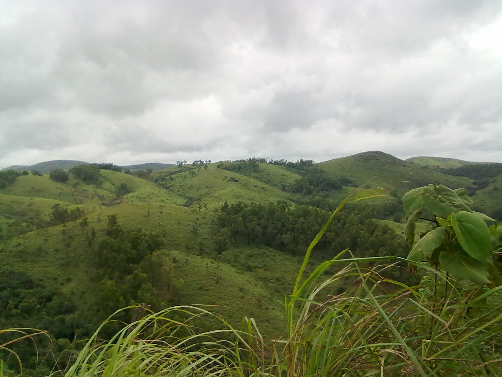

The name Kottayam is a combination of the words "kotta" and "akam" in the local language of Malayalam, meaning "interior of a fort". The current Kottayam district was previously part of the state of Travancore.
How to Reach
Kottayam is linked by major roads and rail to other prominent cities in Kerala, and also by waterways allowing for waterborne travel. The Kottayam Kumali, Ettumanoor-Ernakulam, Kottayam-Pathanamthitta, Thiruvalla-Kidangoor Central Kerala Bypass, and MC road are the major roads in the district. The nearest airport is the Cochin International Airport. SWTD operates ferry services from different parts of the Kottayam district. The ferry service from Vaikom to Thavanakkadavu in the Alappuzha district is the longest. India's first solar ferry service boat, 'Adhithya', operates from Vaikom.
Places to Visit
Kumarakom
Kumarakom, a popular tourist destination. It contains the Kumarakom Bird Sanctuary, which is known for migratory birds.
Vembanad Lake
Vembanad Lake is home to traditional cargo boats called Kettuvallams, which are modified into cruise boats and houseboats.
Alappuzha Backwaters
Vagamon is a hill station in Kerala. It is full of fat cows and beautiful hills, a truly romantic tourist hotspot.

Kumarakom
Kumarakom, a popular tourist destination. It contains the Kumarakom Bird Sanctuary, which is known for migratory birds.

Vembanad Lake
Vembanad Lake is home to traditional cargo boats called Kettuvallams, which are modified into cruise boats and houseboats.

Vagamon
Vagamon is a hill station in Kerala. It is full of fat cows and beautiful hills, a truly romantic tourist hotspot.